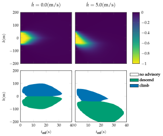

Aircraft Collision Avoidance
Problem
The aircraft collision avoidance problem involves deciding when to issue a climb or descend advisory to our aircraft to avoid an intruder aircraft. The figure below illustrates the problem scene.
State and Action Space
There are three actions corresponding to no advisory, commanding a $5 \text{ m/s}$ descend, and commanding a $5 \text{ m/s}$ climb. The intruder is approaching us head-on with constant horizontal closing speed. The state is specified by the altitude $h$ of our aircraft measured relative to the intruder aircraft, our vertical rate ˙$h$, the previous action $a_{\text{prev}}$, and the time to potential collision $t_{\text{col}}$.
Transitions
Given action $a$, the state variables are updated as follows:
\[\begin{aligned} h &\rightarrow h + h \Delta t \\ h &\rightarrow (h + v)\Delta t \\ a_{\text{prev}} &\rightarrow a \\ t_{\text{col}} &\rightarrow t_{\text{col}} - \Delta t \end{aligned}\]
where $\Delta t = 1 \text{ s}$ and $v$ is selected from a discrete distribution over $-2, 0,$ or $2 \text{m/s}^2$ with associated probabilities $0.25, 0.5, 0.25$. The value $h$ is given by
\[h = \begin{cases} 0 & \text{if } a = \text{ no advisory} \\ a/\Delta t & \text{if } |a - h|/\Delta t < h_{\text{limit}} \\ \text{sign}(a - h)h_{\text{limit}} & \text{otherwise} \end{cases}\]
where $h_{\text{limit}} = 1 \text{m/s}^2$.
Reward and Termination Condition
The episode terminates when taking an action when $t_{\text{col}} < 0$. There is a penalty of $1$ when the intruder comes within $50$ m when $t_{\text{col}} = 0$, and there is a penalty of $0.01$ when $a \neq a_{\text{prev}}$.
Strategies
The aircraft collision avoidance problem can be efficiently solved over a discretized grid using backwards induction value iteration (Section 7.6 of Algorithms for Decision Making) because the dynamics deterministically reduce $t_{\text{col}}$. Slices of the optimal value function and policy are depicted below.
